Three directions · One fixed room · 23 October 2026
Unit 408 living: three Opus directions (D, E, F)
Three Opus directions for the Unit 408 living area, each a complete room with its own seating option so Ivan chooses a design rather than a plan: D Midnight and Cherry (navy velvet, cherry red, white gloss and chrome), E Apricot and Charcoal (a round-armed bouclé curve, charcoal concrete and black steel), F Narra and Solihiya (a Filipino heritage sala in dark wood and cane). All three keep the window AC front clear, the honey-amber parquet, the dark timber hallway arch, the Davies Beige blackout curtains with voile on valance boards and shelves in the TV-wall recess. Conditional fit: the living is not site-measured.
A comparison for one chosen scheme. Quantities and budgets apply to that scheme. Star (☆) any piece in the schedules to collect it under Picks.
Midnight and Cherry
₱129,000–₱153,000Planning range Direction LVEApricot and Charcoal
₱238,000–₱262,000Planning range Direction LVFNarra and Solihiya
₱274,000–₱298,000Planning rangeThe fixed brief
What every scheme must satisfy
- 01
All prices assume new purchases. Three distinct sets of visible furniture, lighting, rugs, textiles and decor; no model or family repeats across the schemes or the parallel sets.
- 02
Every piece fits the measured room with clear walkways and door swings; plans use published dimensions and flag the rest.
- 03
Seating, tables and storage are real catalogue products with a supplier photo, price and source link.
Direction LVD
Midnight and Cherry
a navy velvet channel-tufted 3-seater and one cherry-red wing chair against white high gloss, chrome and black, a charcoal-and-white striped flatweave underfoot and white glass-door bookcases filling the TV-wall recess

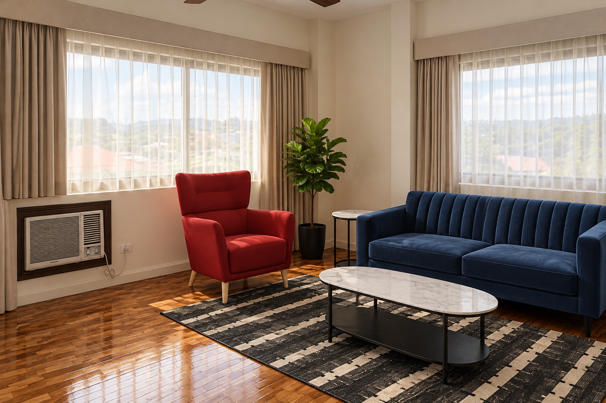

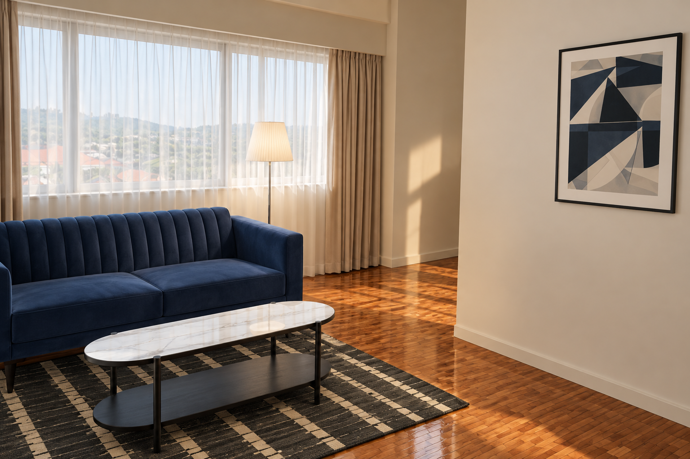
Style renders are AI images (Codex image generation, sketch-to-render) painted over the dimension-led model views below, with the original parquet photo and the supplier product photos as references: a style interpretation of each scheme, not a dimension certification; check every piece against the schedule.

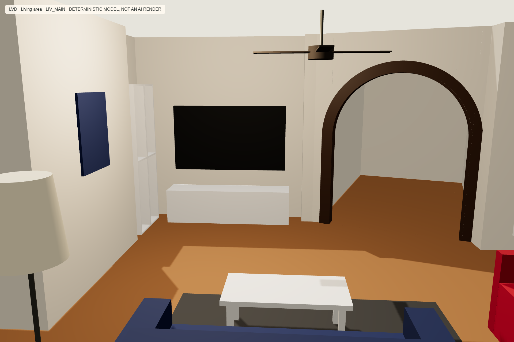

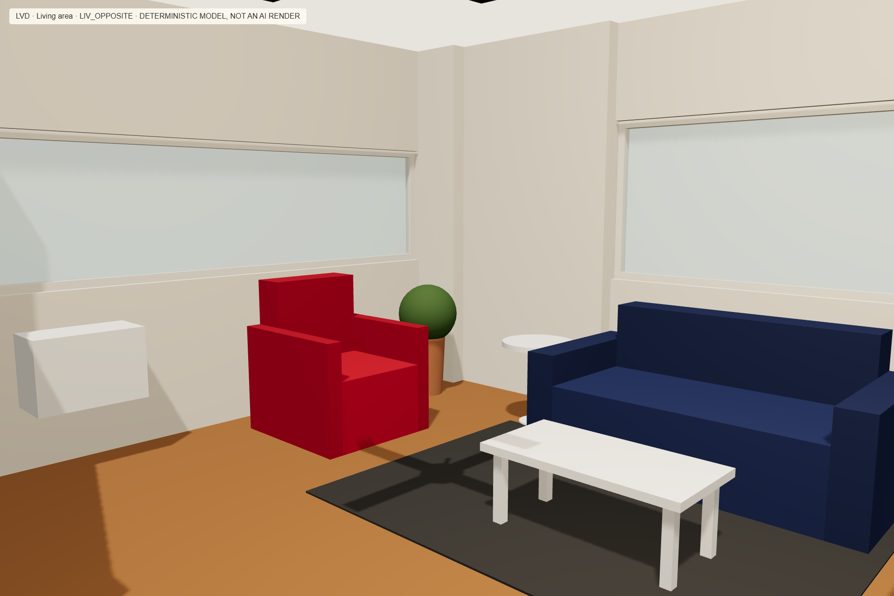

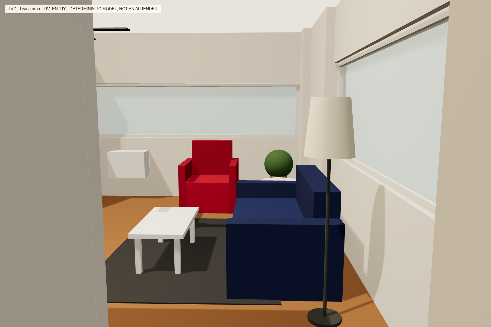

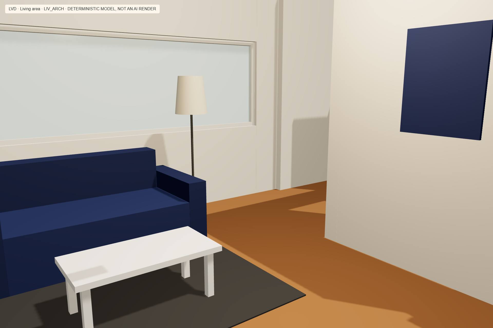
Model views are deterministic Three.js views of the audited Unit 408 shell (parquet, curtains, window, doors, closet, 75 in TV, new split AC) with the selected pieces as proxy forms at published or assumed sizes and the rug and art photos mapped to their rectangles; not AI renders, finishes approximate.
The reference board contains supplier product photographs.

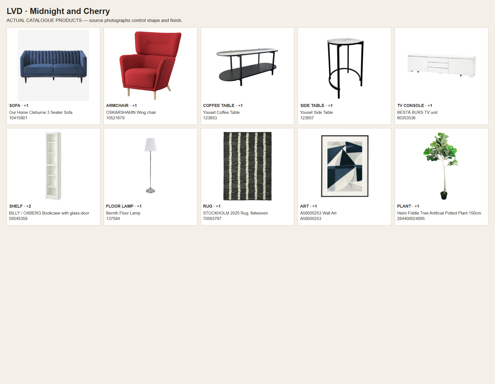

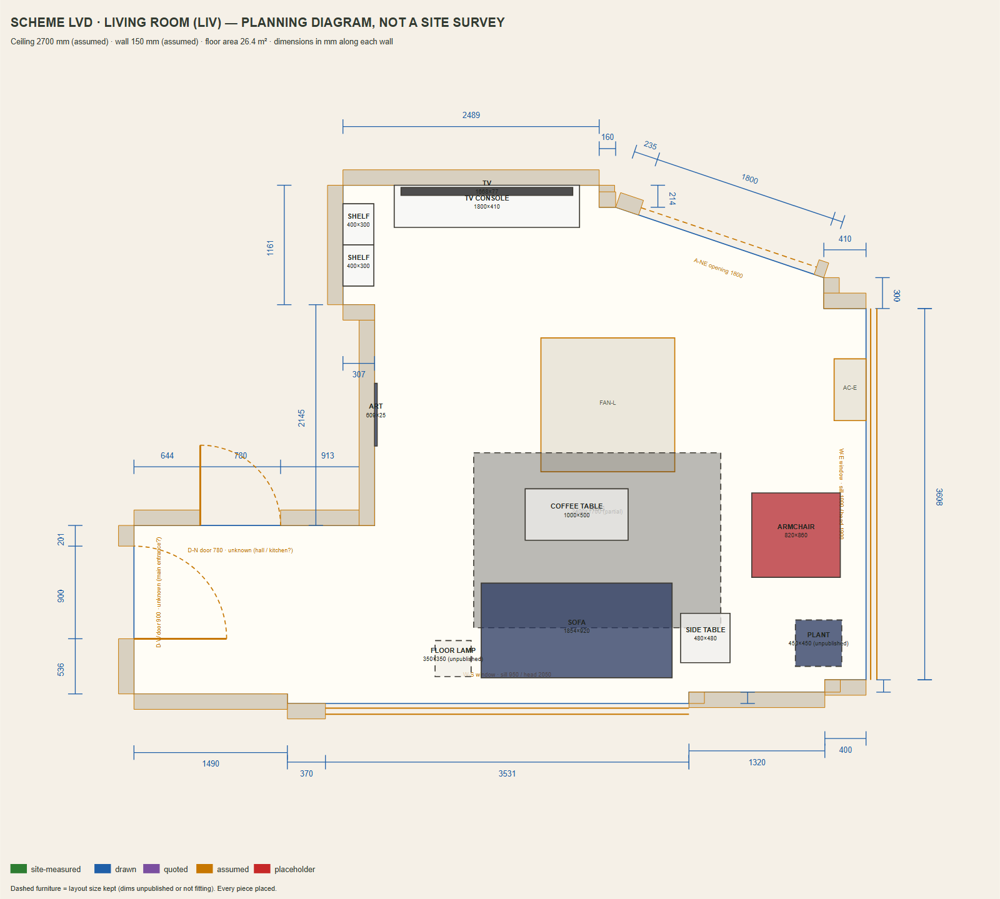
Space & fit
- Seating option D: 3-seater along the south window facing the TV, the wing chair along the east window south of the window AC, an oval coffee table between, a side table at the east end of the sofa, the striped rug 2400 x 1700 under the table and the front sofa legs.
- TV-wall recess (307 x 1161): two white glass-door bookcases (2 x 400 wide, 300 deep, 2020 high) stand in it facing the room.
- Curtain lines kept: 250 mm behind the sofa and the chair; the floor in front of the window AC stays clear; the hallway arch and the bay keep their walkways.
- Conditional fit: the living is not site-measured; sills, heads, door heights, the fan and AC positions, the TV-wall recess and the hallway arch (1450 x 2240) are assumed (see ASSUMED.md), the 2.7 m ceiling is as Ivan stated it, and every plan and view depends on them until taped.
Every scheduled itemDirection LVD · selected pieces10 rows
10 scheduled items
| Starred | Piece & exact variant | Qty / scheme | Unit price | Line price | Source & fulfillment |
|---|---|---|---|---|---|
sofaOur Home Cleburne 3 Seater SofaBlue / 3 Seater Dimensions & source notesDimensions (mm): width: 1854; depth: 920; height: 850 Notes: Navy velvet channel-tufted 3-seater on black legs; the anchor of the room, along the south window facing the TV. Price basis: catalogue |
1LVD | ₱25,155Source price: 2026-10-20 | ₱25,155 | Catalogue export 20 Oct 2026 | availability Online listing available | Cebu delivery unconfirmedSupplier page ↗ | |
armchairOSKARSHAMN Wing chairOSKARSHAMN Wing chair, Tonerud red; article 10521679 Dimensions & source notesDimensions (mm): width: 820; depth: 860; height: 990 Notes: Cherry-red high wing chair on pale legs, along the east window south of the window AC, turned to the group. Price basis: catalogue |
1LVD | ₱14,999Source price: 2026-10-20 | ₱14,999 | Catalogue export 20 Oct 2026 | availability In stock according to source | Cebu delivery unconfirmedSupplier page ↗ | |
coffee tableYouset Coffee TableBlack Marble; SKU 123653 Dimensions & source notesDimensions (mm): width: 1000; depth: 500; height: 400 Notes: Oval white marble-look top and lower shelf on a black metal frame. Price basis: catalogue |
1LVD | ₱3,850Source price: 2026-10-20 | ₱3,850 | Catalogue export 20 Oct 2026 | availability Catalog listed | Cebu delivery unconfirmedSupplier page ↗ | |
side tableYouset Side TableBlack Marble; SKU 123657 Dimensions & source notesDimensions (mm): width: 480; depth: 480; height: 570 Notes: Round white marble-look top on a black hoop frame, at the east end of the sofa. Price basis: catalogue |
1LVD | ₱1,850Source price: 2026-10-20 | ₱1,850 | Catalogue export 20 Oct 2026 | availability Catalog listed | Cebu delivery unconfirmedSupplier page ↗ | |
 tv consoleBESTÅ BURS TV unitTV unit, high gloss white, 180x41x49 cm (70 7/8x16 1/8x19 1/4 ") Dimensions & source notesDimensions (mm): width: 1800; depth: 410; height: 490 Notes: High-gloss white low TV unit, 1800 long, centred under the 75 in TV. Price basis: catalogue |
1LVD | ₱19,999Source price: 2026-10-20 | ₱19,999 | Catalogue export 20 Oct 2026 | availability Available for delivery | Cebu delivery unconfirmedSupplier page ↗ | |
 shelfBILLY / OXBERG Bookcase with glass-doorBILLY / OXBERG Bookcase with glass-door, white/glass, 40x30x202 cm; article 59545358 Dimensions & source notesDimensions (mm): width: 400; depth: 300; height: 2020 Notes: Two white bookcases with glass doors side by side in the TV-wall recess (800 of its 1161 run, 300 deep in the 307 depth). Price basis: catalogue |
2LVD | ₱3,999Source price: 2026-10-20 | ₱7,998 | Catalogue export 20 Oct 2026 | availability Catalog listed | Cebu delivery unconfirmedSupplier page ↗ | |
floor lampBernth Floor LampSingle published variant; SKU 137584 Dimensions & source notesNotes: Chrome stem with a white pleated shade, at the west end of the sofa. Dimensions unpublished: planned at 350 x 350 x 1600. Price basis: catalogue |
1LVD | ₱2,540Source price: 2026-10-20 | ₱2,540 | Catalogue export 20 Oct 2026 | availability Catalog listed | Cebu delivery unconfirmedSupplier page ↗ | |
 rugSTOCKHOLM 2025 Rug, flatwovenSTOCKHOLM 2025 Rug, flatwoven, gray/white handwoven, 170x240 cm; article 70593767 Dimensions & source notesDimensions (mm): width: 1700; depth: 2400 Notes: Handwoven charcoal flatweave with white stripes, 170 x 240 cm, long side along the TV wall, under the table and the front sofa legs. Price basis: catalogue |
1LVD | ₱11,999Source price: 2026-10-20 | ₱11,999 | Catalogue export 20 Oct 2026 | availability In stock according to source | Cebu delivery unconfirmedSupplier page ↗ | |
artA58000253 Wall ArtA58000253 Wall Art; manufacturer SKU A58000253; Default Title; Black/White Dimensions & source notesDimensions (mm): width: 609; depth: 25; height: 787 Notes: Navy, white and grey geometric print in a black frame, on the notch wall. Price basis: catalogue |
1LVD | ₱11,600Source price: 2026-10-20 | ₱11,600 | Catalogue export 20 Oct 2026 | availability online_variant_available_cebu_stock_unconfirmed | Cebu delivery unconfirmedSupplier page ↗ | |
plantHeim Fiddle Tree Artificial Potted Plant 150cmItem 284400024095; model Jws3252 Dimensions & source notesNotes: Faux fiddle-leaf fig, 150 cm, in a black pot, in the south-east corner. Pot size unpublished: planned at 450 x 450 x 1500. Price basis: catalogue |
1LVD | ₱2,079Source price: 2026-10-20 | ₱2,079 | Catalogue export 20 Oct 2026 | availability online_variant_available_cebu_stock_unconfirmed | Cebu delivery unconfirmedSupplier page ↗ |


Direction LVE
Apricot and Charcoal
one sculptural round-armed bouclé sofa in warm apricot-tan with a cream swivel chair and a charcoal concrete pedestal table, a black fluted TV stand and black steel shelves, a rice-paper column lamp and one faux travertine drink table

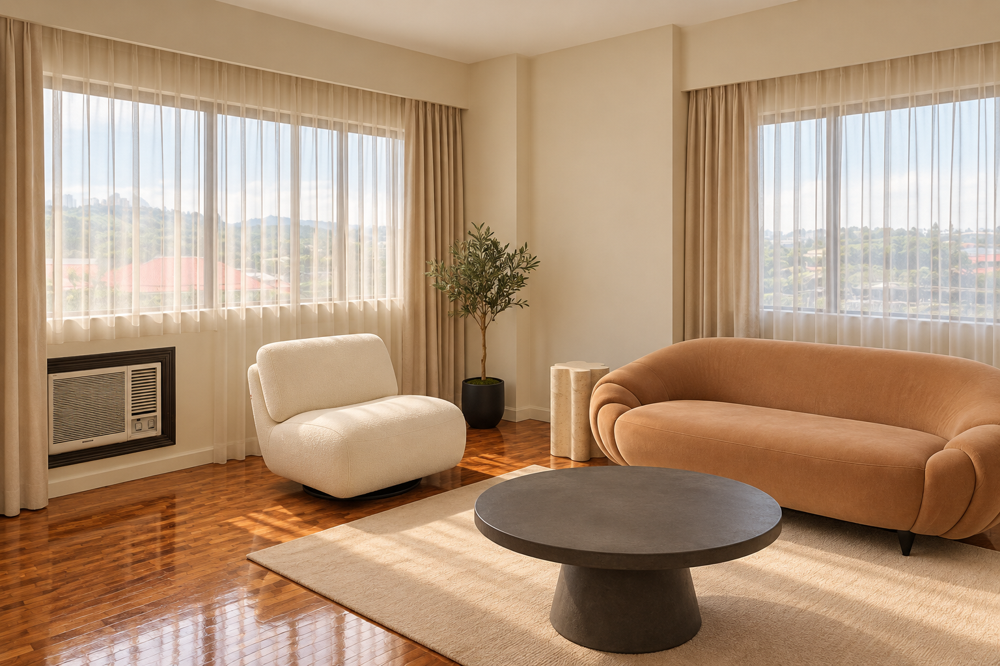

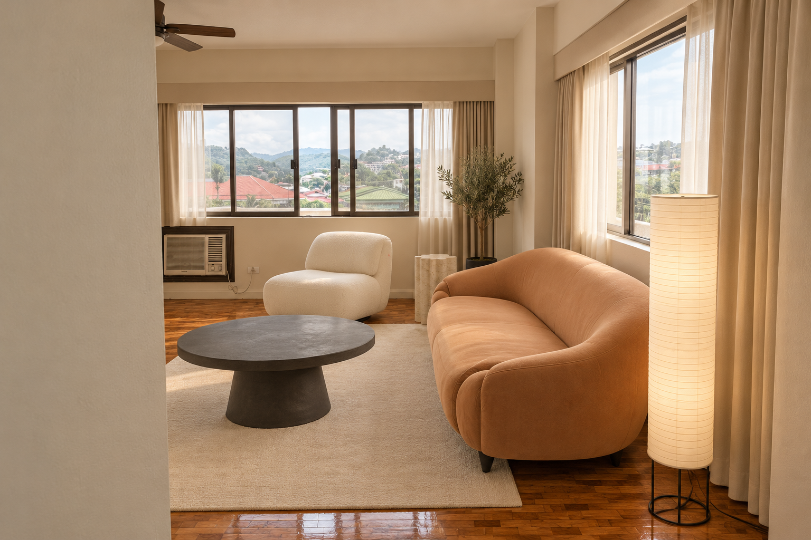

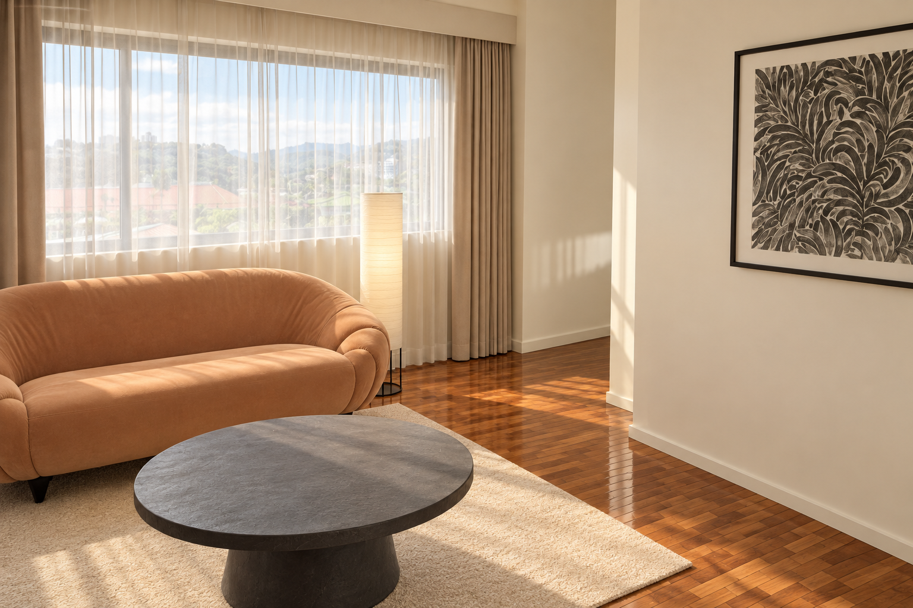
Style renders are AI images (Codex image generation, sketch-to-render) painted over the dimension-led model views below, with the original parquet photo and the supplier product photos as references: a style interpretation of each scheme, not a dimension certification; check every piece against the schedule.

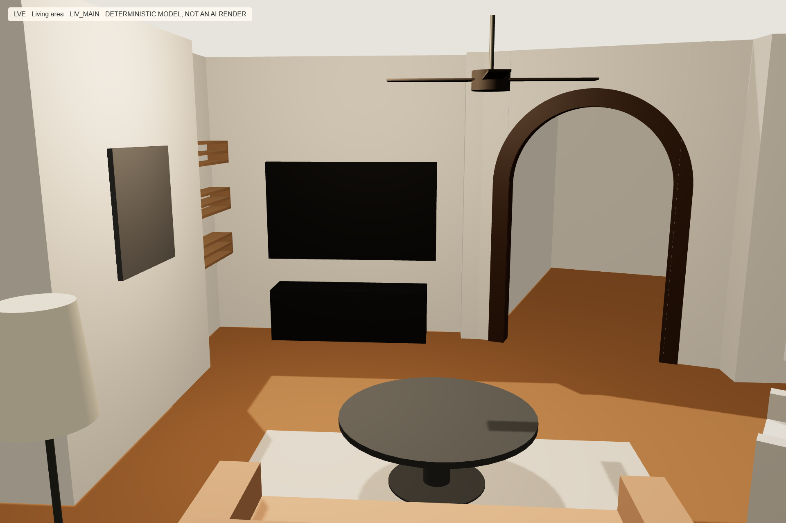

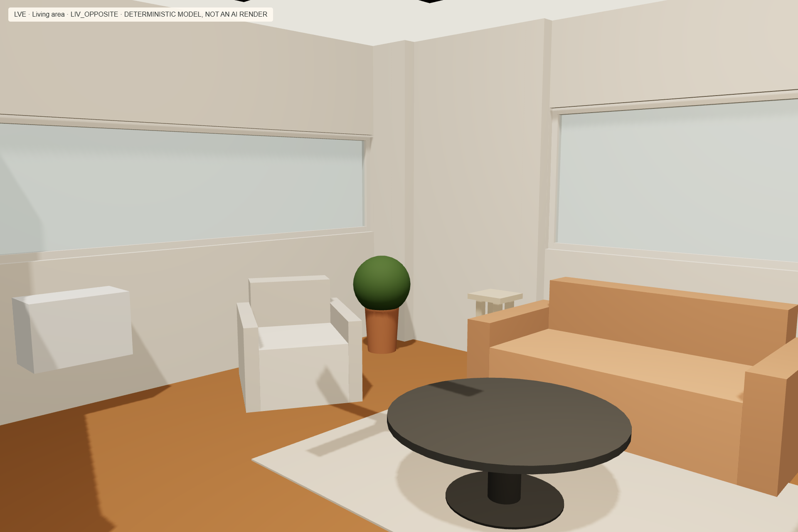

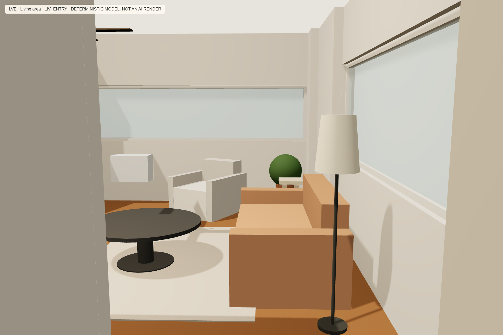

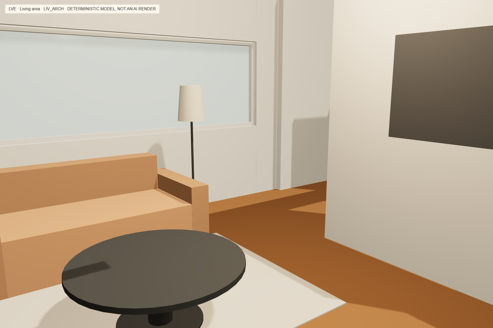
Model views are deterministic Three.js views of the audited Unit 408 shell (parquet, curtains, window, doors, closet, 75 in TV, new split AC) with the selected pieces as proxy forms at published or assumed sizes and the rug and art photos mapped to their rectangles; not AI renders, finishes approximate.
The reference board contains supplier product photographs.

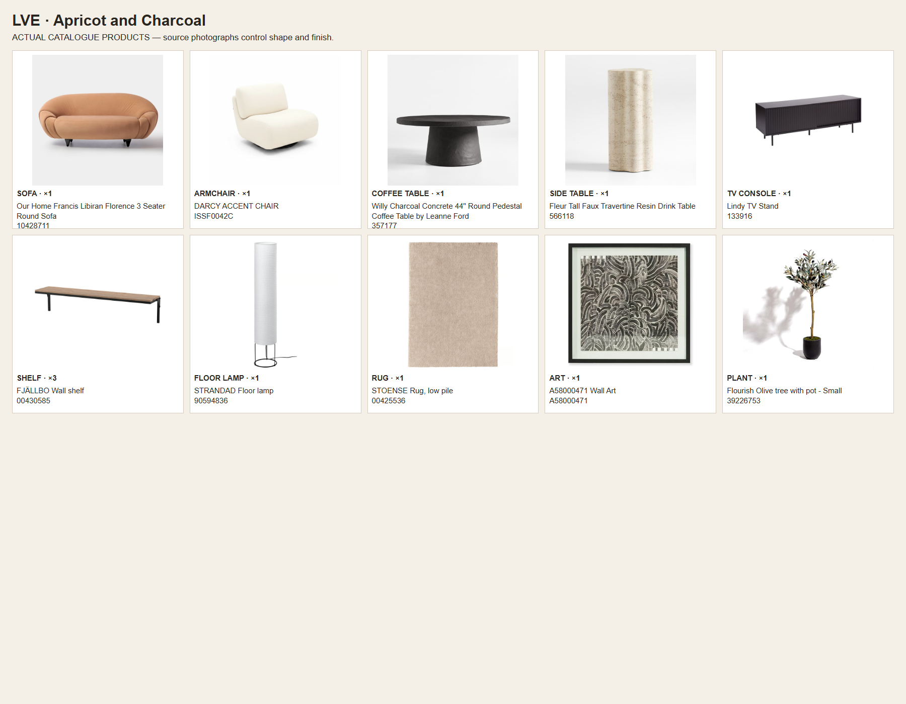

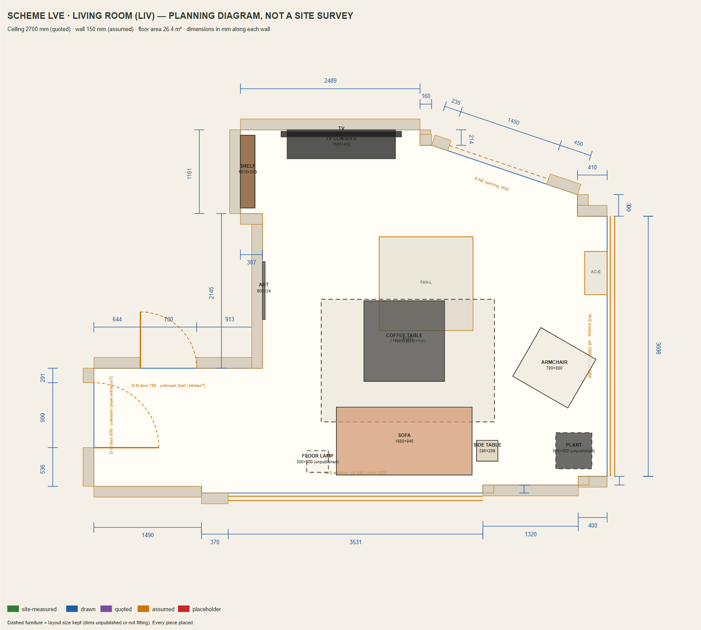
Space & fit
- Seating option E: round-armed 3-seater along the south window facing the TV, the swivel chair on the east side south of the window AC turned toward the TV, the 1117 round table between, the drink table at the east end of the sofa, an off-white rug 2400 x 1700.
- TV-wall recess (307 x 1161): three black bracket wall shelves (1010 wide, 200 deep) one above the other.
- Curtain lines kept: 250 mm behind the sofa and the chair; the floor in front of the window AC stays clear; the hallway arch and the bay keep their walkways.
- Conditional fit: the living is not site-measured; sills, heads, door heights, the fan and AC positions, the TV-wall recess and the hallway arch (1450 x 2240) are assumed (see ASSUMED.md), the 2.7 m ceiling is as Ivan stated it, and every plan and view depends on them until taped.
Every scheduled itemDirection LVE · selected pieces10 rows
10 scheduled items
| Starred | Piece & exact variant | Qty / scheme | Unit price | Line price | Source & fulfillment |
|---|---|---|---|---|---|
sofaOur Home Francis Libiran Florence 3 Seater Round SofaBrown Dimensions & source notesDimensions (mm): width: 1880; depth: 940; height: 790 Notes: Round-armed bouclé 3-seater, listed colour Brown (a warm apricot-tan in the product photo), on black feet; the one curve of the room. Price basis: catalogue |
1LVE | ₱39,950Source price: 2026-10-20 | ₱39,950 | Catalogue export 20 Oct 2026 | availability Online listing available | Cebu delivery unconfirmedSupplier page ↗ | |
armchairDARCY ACCENT CHAIRBeige / Ivory; SKU ISSF0042C Dimensions & source notesDimensions (mm): width: 780; depth: 880; height: 750 Notes: Cream low swivel chair on a metal swivel base, east side, turned toward the TV. Price basis: catalogue |
1LVE | ₱27,950Source price: 2026-10-20 | ₱27,950 | Catalogue export 20 Oct 2026 | availability In stock according to source | Cebu delivery unconfirmedSupplier page ↗ | |
coffee tableWilly Charcoal Concrete 44" Round Pedestal Coffee Table by Leanne FordWilly Charcoal Concrete 44" Round Pedestal Coffee Table by Leanne Ford; Charcoal; published SKU 357177; Shopify variant 51611616477400 Dimensions & source notesDimensions (mm): width: 1117; depth: 1117; height: 431 Notes: Charcoal concrete round pedestal table, 1117 diameter. Price basis: catalogue |
1LVE | ₱59,990Source price: 2026-10-20 | ₱59,990 | Catalogue export 20 Oct 2026 | availability Online listing available | Cebu delivery unconfirmedSupplier page ↗ | |
side tableFleur Tall Faux Travertine Resin Drink TableFleur Tall Faux Travertine Resin Drink Table; Travertine; published SKU 566118; Shopify variant 44463573991640 Dimensions & source notesDimensions (mm): width: 295; depth: 289; height: 660 Notes: Faux travertine drink table on a sculpted column, at the east end of the sofa. Price basis: catalogue |
1LVE | ₱34,990Source price: 2026-10-20 | ₱34,990 | Catalogue export 20 Oct 2026 | availability Online listing available | Cebu delivery unconfirmedSupplier page ↗ | |
tv consoleLindy TV StandBlack; SKU 133916 Dimensions & source notesDimensions (mm): width: 1500; depth: 400; height: 500 Notes: Black fluted sliding-door TV stand on slim black legs, 1500 long, centred under the TV. Price basis: catalogue |
1LVE | ₱9,850Source price: 2026-10-20 | ₱9,850 | Catalogue export 20 Oct 2026 | availability In stock according to source | Cebu delivery unconfirmedSupplier page ↗ | |
 shelfFJÄLLBO Wall shelfFJÄLLBO Wall shelf, black, 101x20 cm; article 00430585 Dimensions & source notesDimensions (mm): width: 1010; depth: 200; height: 210 Notes: Three black steel bracket wall shelves with wood-look boards (1010 wide) one above the other in the TV-wall recess. Price basis: catalogue |
3LVE | ₱1,999Source price: 2026-10-20 | ₱5,997 | Catalogue export 20 Oct 2026 | availability In stock according to source | Cebu delivery unconfirmedSupplier page ↗ | |
 floor lampSTRANDAD Floor lampSTRANDAD Floor lamp, white/black; article 90594836 Dimensions & source notesNotes: White rice-paper column shade on a black steel base, at the west end of the sofa. Dimensions unpublished: planned at 300 x 300 x 1500. Price basis: catalogue |
1LVE | ₱799Source price: 2026-10-20 | ₱799 | Catalogue export 20 Oct 2026 | availability In stock according to source | Cebu delivery unconfirmedSupplier page ↗ | |
 rugSTOENSE Rug, low pileSTOENSE Rug, low pile, off-white, 170x240 cm; article 00425536 Dimensions & source notesDimensions (mm): width: 1700; depth: 2400 Notes: Off-white low-pile rug, 170 x 240 cm, long side along the TV wall. Price basis: catalogue |
1LVE | ₱5,999Source price: 2026-10-20 | ₱5,999 | Catalogue export 20 Oct 2026 | availability In stock according to source | Cebu delivery unconfirmedSupplier page ↗ | |
artA58000471 Wall ArtA58000471 Wall Art; manufacturer SKU A58000471; Default Title; Monochromatic finish in elegant black-and-white Dimensions & source notesDimensions (mm): width: 800; depth: 34; height: 800 Notes: Black and white brushstroke print in a black frame, 800 x 800, on the notch wall. Price basis: catalogue |
1LVE | ₱13,000Source price: 2026-10-20 | ₱13,000 | Catalogue export 20 Oct 2026 | availability online_variant_available_cebu_stock_unconfirmed | Cebu delivery unconfirmedSupplier page ↗ | |
plantFlourish Olive tree with pot - SmallSmall; SKU 39226753 Dimensions & source notesNotes: Faux olive tree (small) in a black pot, south-east corner. Size unpublished: planned at 500 x 500 x 1300. Price basis: catalogue |
1LVE | ₱2,609.10Source price: 2026-10-20 | ₱2,609.10 | Catalogue export 20 Oct 2026 | availability online_variant_available_cebu_stock_unconfirmed | Cebu delivery unconfirmedSupplier page ↗ |


Direction LVF
Narra and Solihiya
a Filipino heritage sala in dark-stained solid wood and solihiya cane: a scroll-armed 2-seater and two matching lounge chairs with cream cushions, a round cane-arched coffee table, a dark walnut TV cabinet, a bamboo column lamp and a woven black-and-cream wall piece

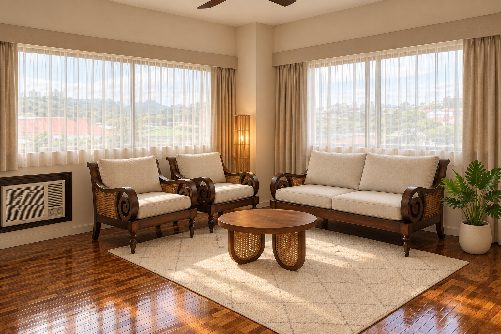

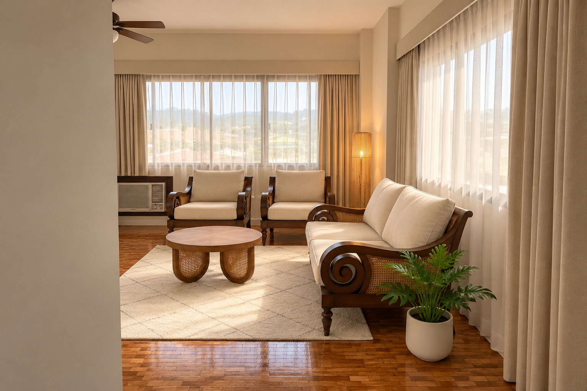

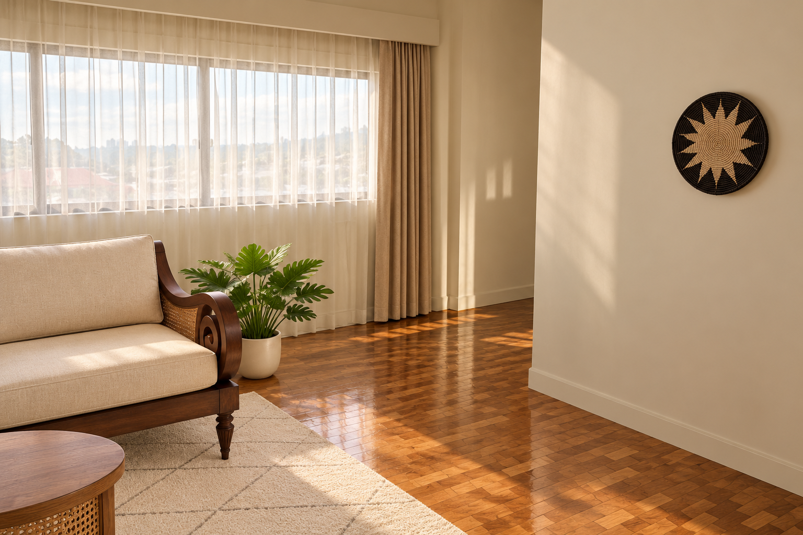
Style renders are AI images (Codex image generation, sketch-to-render) painted over the dimension-led model views below, with the original parquet photo and the supplier product photos as references: a style interpretation of each scheme, not a dimension certification; check every piece against the schedule.

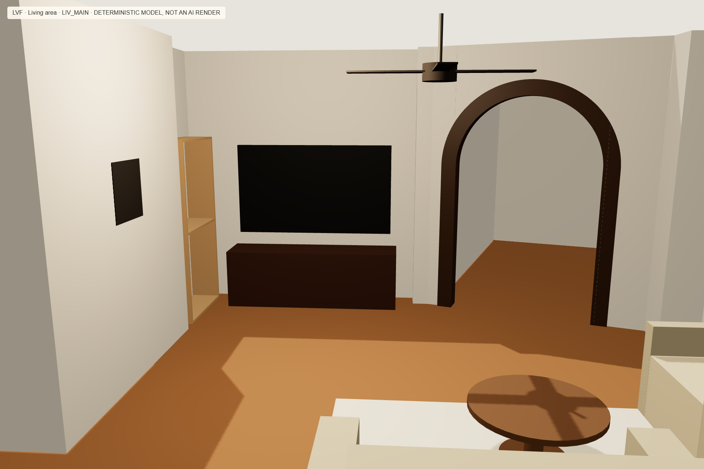

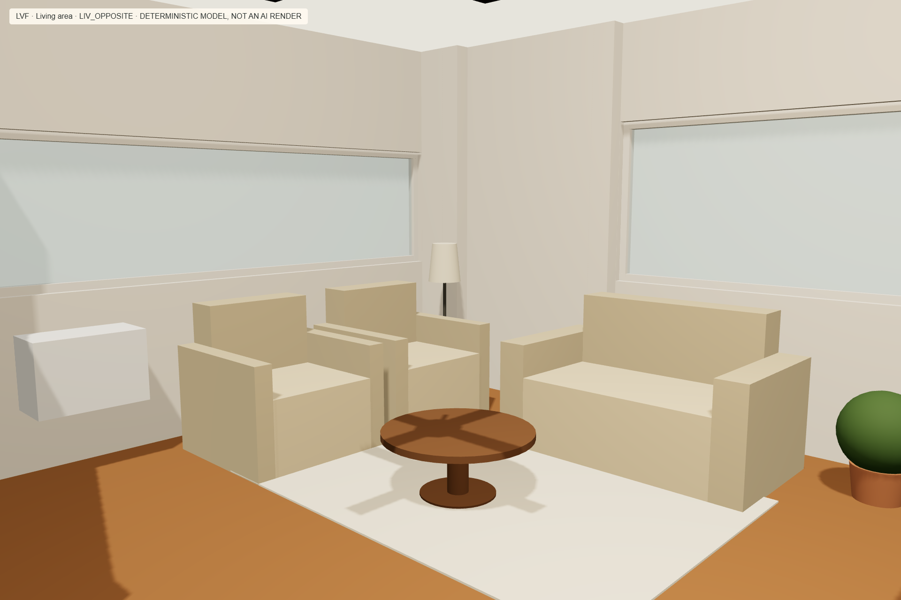

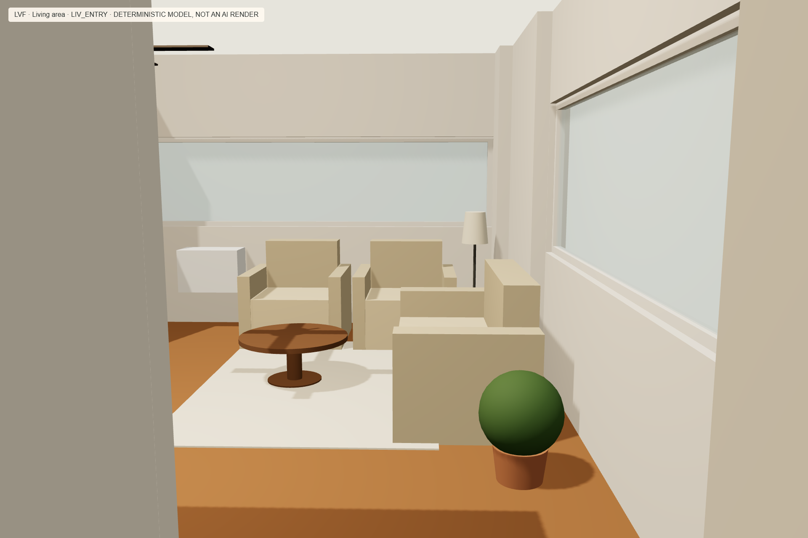

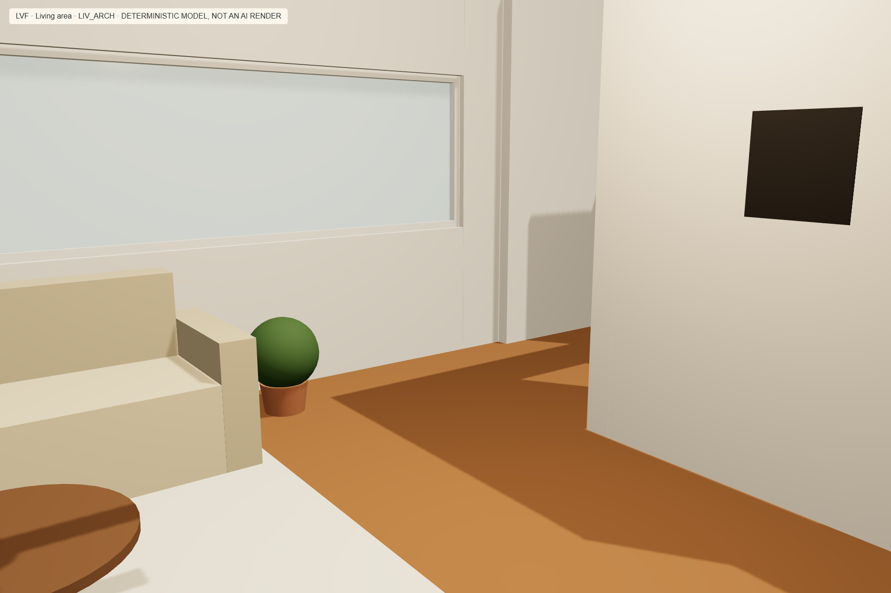
Model views are deterministic Three.js views of the audited Unit 408 shell (parquet, curtains, window, doors, closet, 75 in TV, new split AC) with the selected pieces as proxy forms at published or assumed sizes and the rug and art photos mapped to their rectangles; not AI renders, finishes approximate.
The reference board contains supplier product photographs.

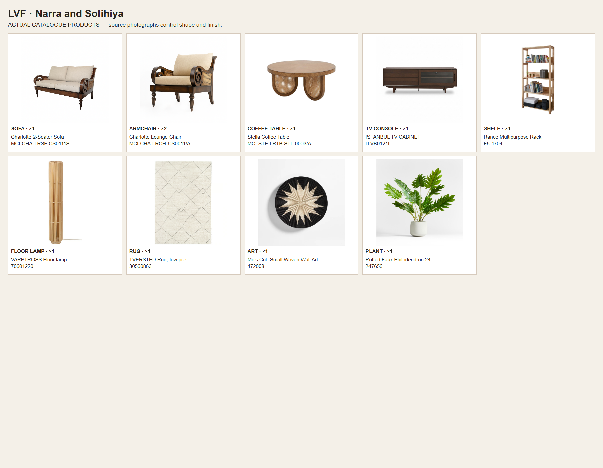

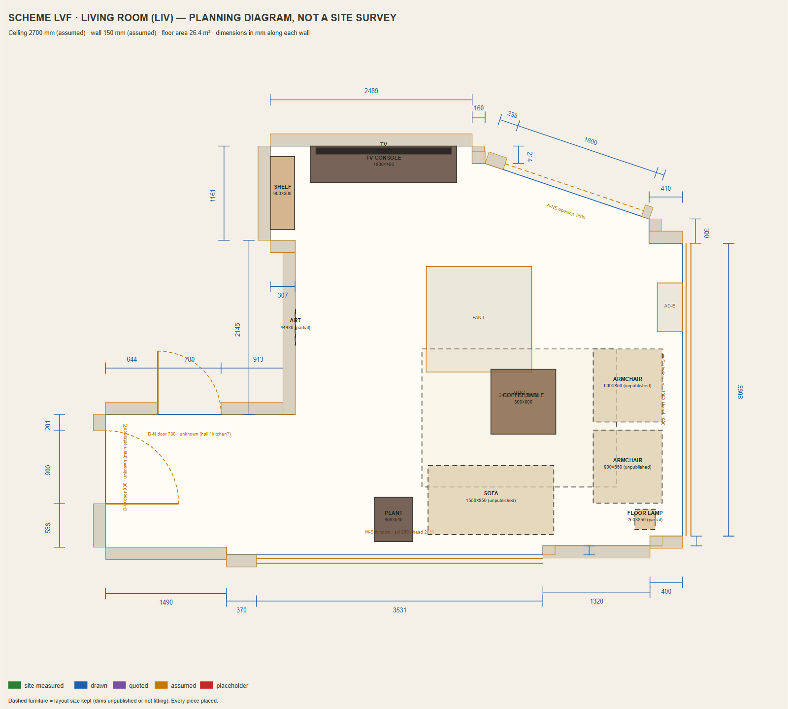
Space & fit
- Seating option F: 2-seater along the south window facing the TV, the two lounge chairs side by side along the east window, both south of the window AC, the round coffee table between, a cream rug 2400 x 1700.
- TV-wall recess (307 x 1161): an open rubberwood rack (900 wide, 300 deep, 1800 high).
- Mejore publishes no dimensions for the 2-seater and the lounge chairs: the plan uses planning sizes (1550 x 850 and 900 x 850) until they are checked in the showroom.
- Conditional fit: the living is not site-measured; sills, heads, door heights, the fan and AC positions, the TV-wall recess and the hallway arch (1450 x 2240) are assumed (see ASSUMED.md), the 2.7 m ceiling is as Ivan stated it, and every plan and view depends on them until taped.
Every scheduled itemDirection LVF · selected pieces9 rows
9 scheduled items
| Starred | Piece & exact variant | Qty / scheme | Unit price | Line price | Source & fulfillment |
|---|---|---|---|---|---|
sofaCharlotte 2-Seater SofaCharlotte 2-Seater Sofa; official listing SKU MCI-CHA-LRSF-CS0111S Dimensions & source notesNotes: Scroll-armed 2-seater in dark-stained solid wood with solihiya cane sides and cream cushions. Mejore publishes no dimensions: planned at 1550 x 850 x 900 until checked in the showroom. Price basis: catalogue |
1LVF | ₱60,000Source price: 2026-10-20 | ₱60,000 | Catalogue export 20 Oct 2026 | availability In stock according to source | Cebu delivery unconfirmedSupplier page ↗ | |
armchairCharlotte Lounge ChairCharlotte Lounge Chair; Beige; official listing SKU MCI-CHA-LRCH-CS0011/A Dimensions & source notesNotes: Matching scroll-armed lounge chairs, dark walnut finish, cane sides, beige cushions; side by side along the east window, both south of the window AC. Dimensions unpublished: planned at 900 x 850 x 900. Price basis: catalogue |
2LVF | ₱39,285Source price: 2026-10-20 | ₱78,570 | Catalogue export 20 Oct 2026 | availability In stock according to source | Cebu delivery unconfirmedSupplier page ↗ | |
coffee tableStella Coffee TableStella Coffee Table; Walnut Brown; official listing SKU MCI-STE-LRTB-STL-0003/A Dimensions & source notesDimensions (mm): width: 800; depth: 800; height: 350 Notes: Round solid-wood top on two arched cane-panelled legs, 800 diameter. Price basis: catalogue |
1LVF | ₱31,700Source price: 2026-10-20 | ₱31,700 | Catalogue export 20 Oct 2026 | availability In stock according to source | Cebu delivery unconfirmedSupplier page ↗ | |
tv consoleISTANBUL TV CABINETDefault Title; SKU ITVB0121L Dimensions & source notesDimensions (mm): width: 1800; depth: 450; height: 599 Notes: Dark walnut TV cabinet with a glass sliding door, 1800 long. Price basis: catalogue |
1LVF | ₱23,995Source price: 2026-10-20 | ₱23,995 | Catalogue export 20 Oct 2026 | availability In stock according to source | Cebu delivery unconfirmedSupplier page ↗ | |
shelfRance Multipurpose RackDisplay Rack; SKU F5-4704 Dimensions & source notesDimensions (mm): width: 900; depth: 300; height: 1800 Notes: Open solid rubberwood rack, 900 x 300 x 1800, in the TV-wall recess. Price basis: catalogue |
1LVF | ₱7,275Source price: 2026-10-20 | ₱7,275 | Catalogue export 20 Oct 2026 | availability In stock according to source | Cebu delivery unconfirmedSupplier page ↗ | |
 floor lampVARPTROSS Floor lampVARPTROSS Floor lamp, bamboo, 118 cm; article 70601220 Dimensions & source notesDimensions (mm): height: 1180 Notes: Bamboo slat column floor lamp, 1180 high, in the south-east corner. Footprint unpublished: planned at 250 x 250. Price basis: catalogue |
1LVF | ₱4,999Source price: 2026-10-20 | ₱4,999 | Catalogue export 20 Oct 2026 | availability Catalog listed | Cebu delivery unconfirmedSupplier page ↗ | |
 rugTVERSTED Rug, low pileTVERSTED Rug, low pile, beige, 170x240 cm; article 30560863 Dimensions & source notesDimensions (mm): width: 1700; depth: 2400 Notes: Low-pile cream rug with a fine grey diamond line, 170 x 240 cm, long side along the TV wall. Price basis: catalogue |
1LVF | ₱11,999Source price: 2026-10-20 | ₱11,999 | Catalogue export 20 Oct 2026 | availability In stock according to source | Cebu delivery unconfirmedSupplier page ↗ | |
artMo's Crib Small Woven Wall ArtSingle listed variant; SKU 472008 Dimensions & source notesDimensions (mm): width: 444; depth: 6 Notes: Black and cream hand-woven sun wall piece, 444 diameter, on the notch wall. Price basis: catalogue |
1LVF | ₱12,595Source price: 2026-10-20 | ₱12,595 | Catalogue export 20 Oct 2026 | availability online_variant_available_cebu_stock_unconfirmed | Cebu delivery unconfirmedSupplier page ↗ | |
plantPotted Faux Philodendron 24"Potted Faux Philodendron 24"; Single listed configuration; published SKU 247656; Shopify variant 43717498011864 Dimensions & source notesDimensions (mm): width: 469; depth: 546; height: 609 Notes: Faux philodendron in a white glazed ceramic pot, 609 high, at the west end of the sofa by the south window. Price basis: catalogue |
1LVF | ₱2,505Source price: 2026-10-20 | ₱2,505 | Catalogue export 20 Oct 2026 | availability Online listing available | Cebu delivery unconfirmedSupplier page ↗ |


Your shortlist
Starred pieces
Star ☆ any piece in the schedules above and it is listed here by direction with a running total. Stars are saved in this browser only. Use Copy link to send them to someone else (the link opens with the same stars) or Copy as text for a message.
No starred pieces yet.
Plain-text list
Compare the complete plan
Budgets, with the open costs visible
Quoted work and fulfillment remain unresolved. The planning ranges include the allowances below, plus 10% contingency, rounded up to ₱1,000.
| Per chosen scheme | LVDMidnight and Cherry | LVEApricot and Charcoal | LVFNarra and Solihiya |
|---|---|---|---|
| Selected design pieces | ₱102,069 | ₱201,134.10 | ₱233,638 |
| Common essentials & room treatments | ₱0 | ₱0 | ₱0 |
| Priced schedule subtotal | ₱102,069 | ₱201,134.10 | ₱233,638 |
| Working planning range | ₱129,000 to ₱153,000 | ₱238,000 to ₱262,000 | ₱274,000 to ₱298,000 |
Planning allowances ₱15,000–₱37,000 before contingency
| Work or provision | Low | High | Basis & limits |
|---|---|---|---|
| Cebu freight, delivery and handling | ₱5,000 | ₱15,000 | Planning allowance only; no shipping rates/address allocation obtained. Overseas freight not included. |
| TV/art/pendant installation and assembly | ₱5,000 | ₱10,000 | Planning allowance only; installer must specify anchors and verify substrate. Includes no structural rebuilding. |
| Paint touch-up and site coordination | ₱5,000 | ₱12,000 | Estimator reserve, not a contractor quote. |
Shared foundations
Common essentials & fixed room treatments
The fixed curtains and listed technical essentials are common room provisions. Scheme letters show where each row applies; quantities are per chosen scheme.
Every scheduled itemCommon room schedule0 rows
0 scheduled items
| Starred | Piece & exact variant | Qty / scheme | Unit price | Line price | Source & fulfillment |
|---|
Before ordering
Resolve these procurement gates
- Prices are catalogue references with each line's own price date. Product existence and photos are verified; exact Cebu stock, address delivery and checkout totals are not.
- Pieces flagged "dims unpublished" in the room placement report keep the layout size; measure them at the showroom before ordering.
- Delivery path for the sofa, dining table and buffet (lift, corridor, door widths) to be confirmed with the building before ordering.
- Style renders are AI interpretations painted over the dimension-led model views; supplier photo boards, measured plans and the item schedule are the acceptance basis.
Source notes
- Pieces come from the frozen 20 Oct 2026 catalogue export (cheapest available offer that day); photos are the suppliers' own.
- Room geometry: owner-drawn plan (sheet 1 chains, the TV-wall recess restored on Ivan's 23 Oct answer) plus Jamaica's 22 Oct photos (the hallway arch); the living is not site-measured, see ASSUMED.md.
- Curtains per the Seoul quote (Davies Beige blackout + voile, full length, valance boards) are not priced in these sets; the TV is a technical slot, not a line item.
- Where a supplier publishes no dimensions (Mejore seating, two lamps, two plants) the plan uses a stated planning size and flags it.